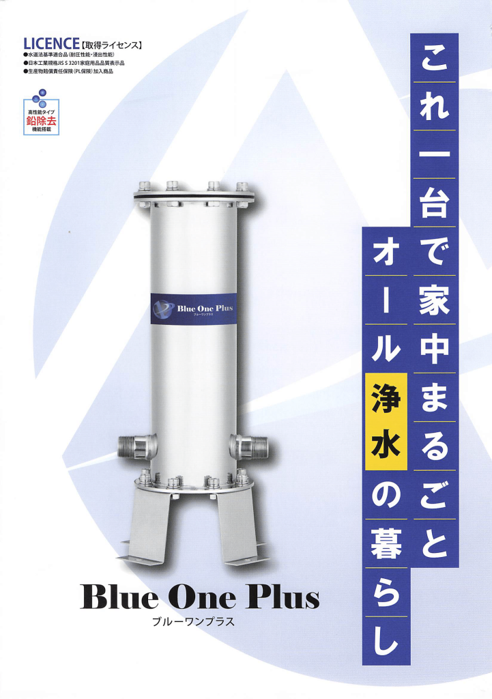

BlueOne Plus
〜オール浄水システム〜

オール浄水システムは、お客様の日常生活に清潔で安全な水を提供します。この革新的なシステムは、厳選されたフィルタリング技術を使用して、水道水に含まれる不純物を効果的に除去します。結果として、飲料水から料理用の水、洗面やお風呂の水まで、家庭内のすべての水が浄化されます。簡単な設置とメンテナンスで、いつでも安心して使用できるよう設計されています。健康と快適さを重視する家庭に最適な、私たちのオール浄水システムで、生活の質を向上させましょう。
詳細はこちら